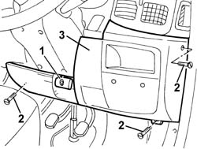
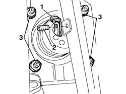
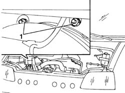
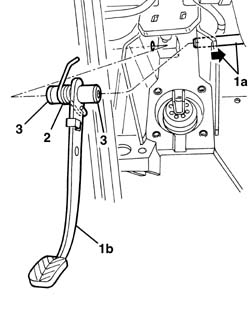
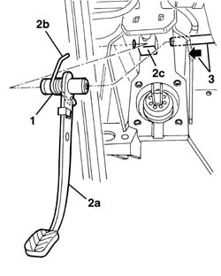

3330B23 BRAKE PEDAL - R R FOR RHD VERSIONS
- Path
- Procedures > 33 BRAKING SYSTEM > 3330 HYDRAULIC BRAKING SYSTEM > 3330B PEDAL UNIT > 3330B23 BRAKE PEDAL - R R FOR RHD VERSIONS
- Kind
- repair procedure (removal / refitting; the operation number is the code)
- Applies to
- all engines; all production periods
- Interactive page
- https://sloeber94.github.io/elrnDB-fDct/en/#/244001099
Applies to: all engines; all production periods
 Removing
Removing
 Refitting
Refitting- Position the vehicle on the lift.
- Disconnect the negative battery lead.
 | Description | Connector |
|---|---|---|
. | Battery | A001B |
1. Lift up the steering wheel adjustment lever.
2. Undo the panel fixing bolts.
3. Remove the panel, releasing it from the inner retainers.

Applies to: all engines; all production periods
Op. 1068A21 ACCELERATOR PEDAL WITH INTEGRATED POTENTIOMETER - R.R. FOR RIGHT DRIVE VERSIONS
Op. 5550D10 BRAKE LIGHT SWITCH - R+R
- Proceed from the inside of the passenger compartment.
1. Remove the spring fastening the brake servo push rod to the brake pedal.
2. Remove the pin from the brake pedal.
3. Undo the nuts fixing the brake servo to the pedal assembly.
- Move the pedal assembly as far away as possible from the bodyshell.

Applies to: all engines; all production periods
1. Open the bonnet and undo the pedal assembly fixing nuts, located above the brake servo.

Applies to: all engines; all production periods
1. Working from inside the passenger compartment, move the pedal support slightly backwards and extract the pin (1a) until the brake pedal (1b) is removed.
2. Keep the pedal return spring.
3. If necessary, extract the bushes (which are a press-fit).

Applies to: all engines; all production periods
Refitting
Removing- Check that the pedal assembly is not damaged.
- If the bushes have been removed, refit them (press-fit).
1. Position the return spring on the pedal.
2. Place the brake pedal (2a) in position with the end (2b) of the return spring fitted under the pedal support mounting (2c).
3. Fit the brake pedal pin in the housing.

Applies to: all engines; all production periods
- Tighten the pedal assembly fixing nuts.
 | Value - daNm | Fastening | Component | Ø |
|---|---|---|---|---|
. | 1.5 | Nut | pedal unit | M8 |
- Close the bonnet.
- Position the brake servo rod on the brake pedal and insert the pin in the housing, then secure it using the retaining spring.
Op. 5550D10 BRAKE LIGHT SWITCH - R+R
Op. 1068A21 ACCELERATOR PEDAL WITH INTEGRATED POTENTIOMETER - R.R. FOR RIGHT DRIVE VERSIONS
- Position the panel, engaging the inner retainers.
- Tighten the panel fixing bolts.
- Lock the steering wheel adjustment lever.
- Check that the brake pedal and the brake servo are working properly.
- Connect the negative battery lead.
| Description | Connector |
|---|---|---|
. | Battery | A001B |
- Remove the vehicle from the lift.